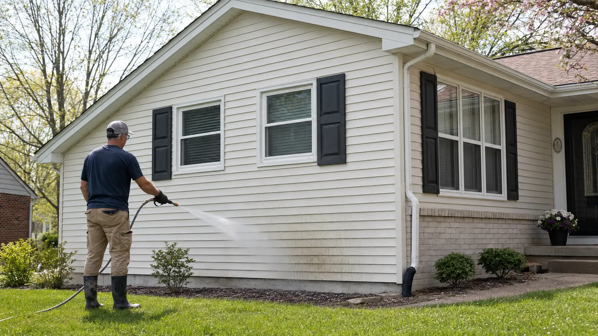

Pressure washing
Pressure washing uses unheated water delivered at controlled pressure. It is commonly used for concrete, walkways, patios, equipment, and other exterior surfaces when the material and condition allow it.
Exterior cleaning guidance for Mid-Missouri homeowners
Pressure, detergent, water flow, nozzle choice, and surface condition all affect the result. Mid-Mo Power Wash Pro provides practical guidance for siding, concrete, decks, patios, brick, and other exterior surfaces.

Both processes use pressurized water and specialized equipment. The main technical difference is heat, although homeowners and contractors often use the two names interchangeably.
Pressure washing uses unheated water delivered at controlled pressure. It is commonly used for concrete, walkways, patios, equipment, and other exterior surfaces when the material and condition allow it.
Power washing adds heated water. Heat can help break down grease, oil, and stubborn commercial buildup, but it is unnecessary for many residential cleaning projects and may be unsuitable for delicate materials.
Water temperature is only one factor. Surface condition, detergent, dwell time, flow, nozzle size, distance, and rinse method all affect the result. Siding usually needs a low-pressure washing process rather than stronger pressure or added heat.
Review pressure and surface guidanceG&S is a fully insured exterior cleaning company based in Mexico, Missouri. Mid-Mo Power Wash Pro shares the inspection points, surface concerns, and cleaning methods used to protect siding, concrete, decks, masonry, plants, fixtures, and drainage areas.
Choose a surface or question to review cleaning methods, equipment, common risks, and conditions that call for professional service.
Review general reference ranges and starting methods for concrete, siding, brick, wood, composite decking, pavers, and outdoor furniture.
Understand spray angles, nozzle markings, detergent application, surface cleaners, and equipment setup.
Plan siding, driveway, deck, patio, and masonry projects around the material, stain, and drainage conditions.

Learn how spring pollen, summer humidity, fall leaves, and freezing temperatures affect exterior cleaning schedules.
Read the ArticleInspect for oxidation, loose paint, damaged mortar, soft wood, failing seals, open electrical fixtures, and drainage problems. Test the planned method in a small, inconspicuous area.
Read the safety checks